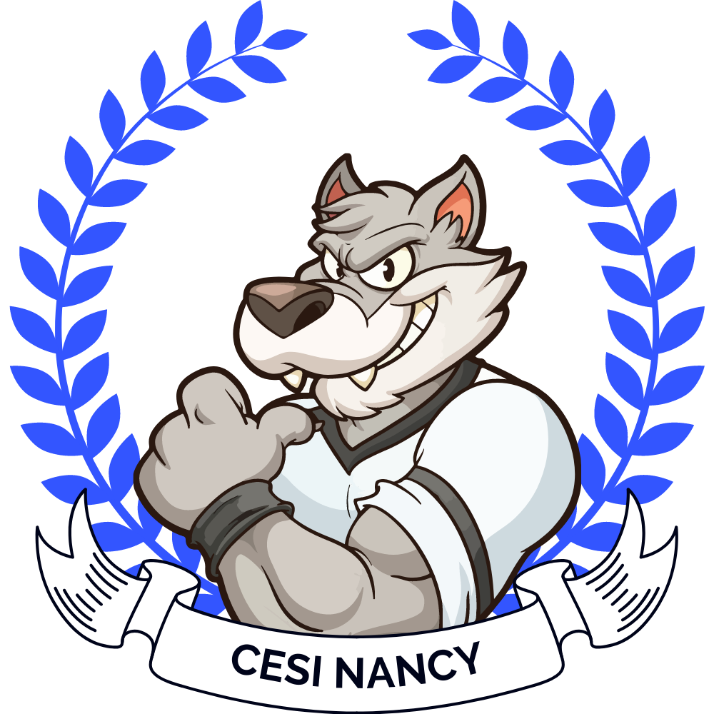

Tournoi caritatif vidéoludique pour les sans-abris de Nancy
üéØ Notre Mission
Organiser chaque année un tournoi de jeux vidéo dont les bénéfices servent à acheter et distribuer des biens essentiels pour les plus démunis de la ville.
Partenaires : Unis&Solidaires Vandoeuvre
Dernière édition : 1633€ récoltés - Achats de vêtements chauds


Nos Partenaires
